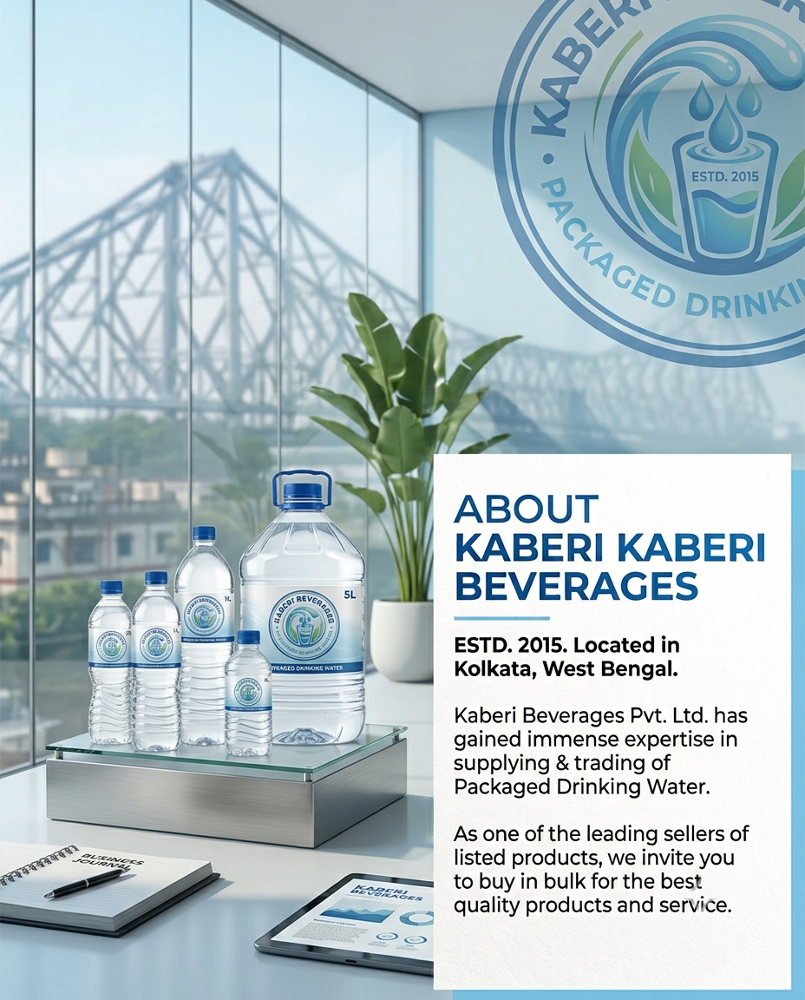

Refreshing lives since 2015
Kaberi Beverages Pvt. Ltd. is a packaged drinking water manufacturing and supply company based in Kolkata, West Bengal, established in 2015.

Built on quality, reliability and service
Since 2015, Kaberi Beverages Pvt. Ltd. has focused on one goal: supplying packaged drinking water that people and businesses in Kolkata and West Bengal can depend on. Our approach centres on consistent quality, dependable delivery and attentive customer service.
We work with households, offices, dealers and distributors, tailoring supply — from single bottles to bulk jar orders — to what each customer needs.
2015 — Company established
Kaberi Beverages Pvt. Ltd. begins operations in Kolkata, West Bengal.
Growth
Refining our supply and quality process year on year.
Distribution expansion
Extending our reach across Kolkata and West Bengal.
Today
A reliable packaged drinking water supply partner for the region.
Our values
Quality first
Every batch is treated with the same level of care.
Reliability
Customers can plan around our supply.
Customer service
We stay responsive to enquiries big and small.